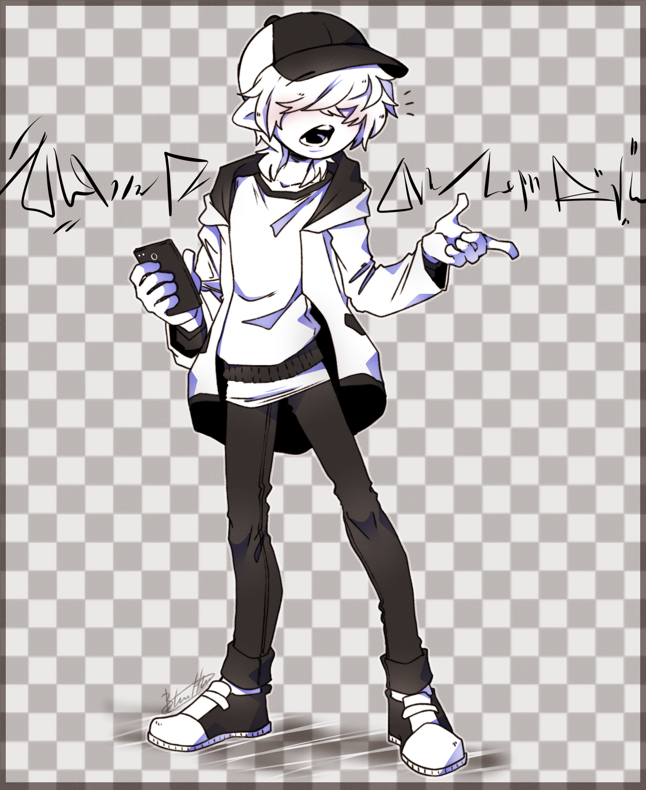
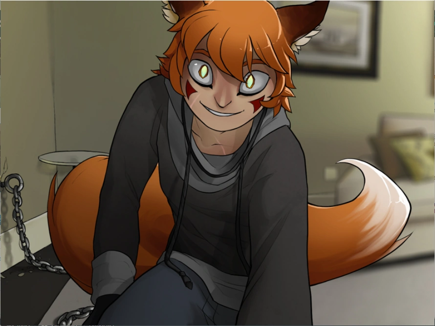
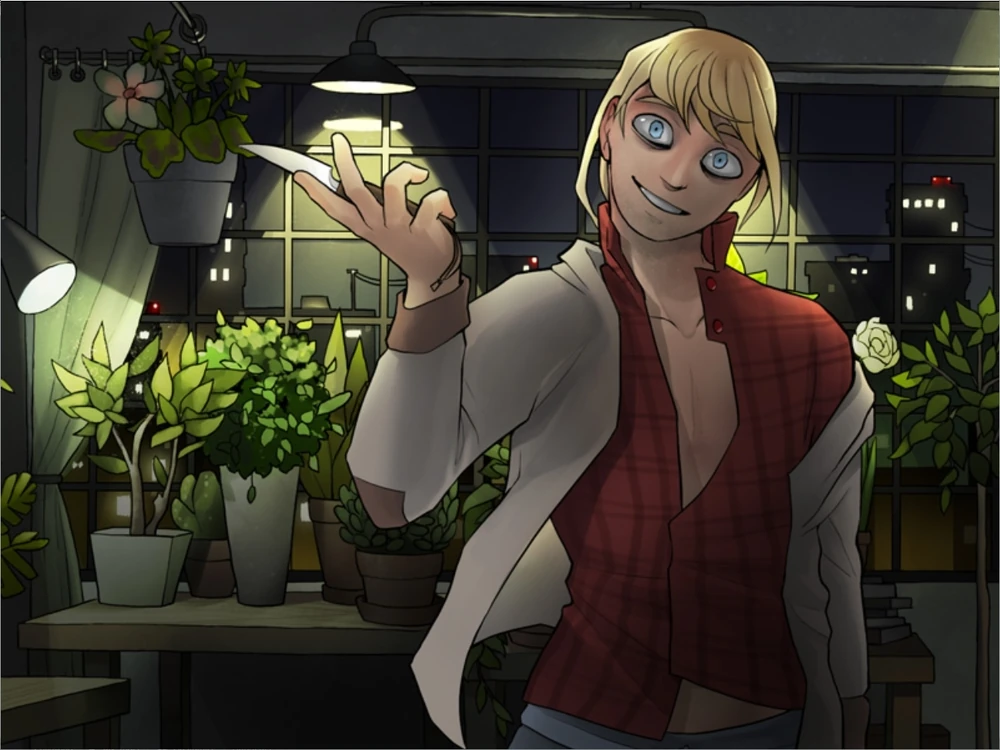
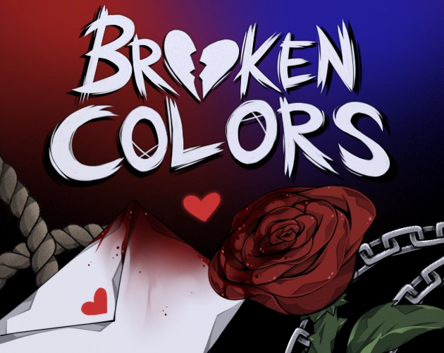

Aqui contém alguns personagens de series e games que curto e algumas coisas sobre eles e também sobre o jogo
Mc ou S/n não é nada mais do que o personagem de que somos representados no jogo, sempre tendo um padrão sem muitas caracteristicas ou genero definisdo, apenas breve parte da história, dansdo liberdade aos fãs dos jogos modificarem, mudar caracteristicas, adicionar coisas, etc. Fica a critério de quem quiser fazer o proprio personagem.

O personagem usado de referência foi o Mc de broken colors.

Boyfriend to Death 2 é um romance visual horror para maiores de 18 anos. Foi desenvolvido por Gatobob e Electricpuke como uma sequência de Boyfriend to Death. O jogo é destinado ao público adulto com 18 anos ou mais devido a elementos de tortura, estupro e outros conceitos obscuros. O game conta com varíos finais, cada um dele podendo ser sua sobrevivência ou sua morte por cada personagem que você pode criar um vincúlo ou uma intriga.

Um dos personagens que temos no jogo é Ren, ele é o que podemos considerar um meio raposa, hibrido, ou um kitsume. Ele é um personagem presente também em Boyfriend to death que é encontrado na rota de strade, e em Boyfriend to Death 2 e também em Fresh Blood ele é um dos personagens que podemos ter a probabilidade de chegar escolhendo ir ao bar Jackalope no inicio do jogo. Nós temos nosso primeiro contato com ele quando nosso personagem pede informações para Lawrence começamos conversando com ele, assim Ren aparece e assim ofereçe uma rodada de bebidas para nosso personagem, Lawrence e para si proprio.
Ren tem 21 anos neste jogo, parece praticamente o mesmo do primeiro jogo, exceto pelo fato de usar um moletom cinza junto com calças pretas simples. Dependendo das escolhas do MC, Ren também pode ser mostrado vestindo a camisa de Strade como parte de uma de suas roupas. Ele afirma que “se sente seguro” vestindo a camisa. Ren usa a mesma blusa e shorts cinza para dormir. Ele também não usa óculos neste jogo e, devido à saída de Strade, ele não usa mais a coleira de choque. Por conta dos ocorridos acontecidos com ele no primeiro jogo ele contem várias cicatrizes no corpo e podemos notar uma em seu rosto também·
Com a saída de Strade, Ren removeu a coleira de choque e assumiu o controle da casa. Devido a Strade ter escrito todas as suas senhas em um pedaço de papel, Ren conseguiu obter acesso aos fundos de Strade. Sozinho, recluso e ansiando por companhia, Ren começou a postar em vários fóruns sangrentos, onde fez contato pela primeira vez com Lawrence Oleander . Depois de alguns meses de conversa, os dois tomaram a decisão de se encontrarem na vida real no The Jackalope. O plano de Ren era drogar a bebida de Lawrence e levá-lo para casa, onde ele provavelmente seria preso e forçado a ser amigo ou parceiro romântico de Ren. No entanto, o plano dá errado, seja porque MC pegou o copo de Lawrence ou porque Lawrence decidiu não beber, fazendo com que ele fosse embora imediatamente. Se bebermos do copo de Lawrence e corrermos para o beco enquanto somos perseguidos, é possivel encontrar Ren escondido atrás de uma lixeira, com o rabo para fora. A partir desse ponto, o destino de Ren e o nosso é determinado pelas ações do jogador. Podendo conter 3 rotas levando cada um para um final diferente. O personagem tem 27 finais, 6 finais relacionados à sua morte e 21 finais envolvendo sua sobrevivência.

Assim como Ren ele está presente em Boyfriend to Death 2 com uma rota propria também e ele também é dado como personagem secreto em The Price of Flesh, podemos encontrar sua rota se escolhermos irmos ao bar Jackalope, após acordarmos da nosso sono no bar nosso personagem pergunta que horas são para Lawrence, então apartir daí podemos puxar assunto com ele. Ele não aparece no primeiro jogo, apenas no segundo jogo como personagem principal com rota propria. Em sua rota ele diferente de ren tem uma barra de sanidade, que conforme nossas escolhas de falas e ações ela desce ou sobre.
Lawrence é um homem alto, magro, de pele clara, com cabelo loiro preso em um rabo de cavalo frouxo,olhos azuis frios e sua idade no jogo é de 26 anos . Ele veste uma jaqueta cinza aberta sobre uma camisa xadrez vermelha abotoada e uma calça de moletom cinza. Um anel grosso e preto está tatuado em torno de seus bíceps.
Ele é mostrado para nós sendo "normal" até Ren chegar, apartir disso é possivel reparar a mudança de comportamento de Ren na presença de MC, isso o deixa incomodado, se o jogador escolher beber do como de Lawrence ele ira mostrar leve desapontamento, mas não vai dar importância já de que qualquer maneira ele não iria beber. Assim que Ren sai do bar e Lawrence não consegue o acompanha-lo, ele começa a culpar o jogador pela mudança de comprtamento do outro, assim, após MC sair do bar ele começa com breve diálogo um tanto quanto estranho e tenta o golpea-lo, caso o jogador seja rápido e consiga desviar, ele acaba socando a parede e ainda o persegue até um beco. Após MC acabar desmaiando, ele leva o jogador para seu apartamento que estranhamente tem muitas plantas, então começaa caixa de dialogos levando cada resposta e ação para um final diferente. O personagem contém aproximadamente 20 finais diferente.

Broken Colors é um jogo de apontar e clicar, erótico, de terror e visual novel desenvolvido pela BlasticHeart e holyschnitzel, baseado em Boyfriend To Death(jogo cometado anteriormente). O jogo contém até o momento de agora apenas um dia, mas segundo a criadora em breve teremos mais do jogo(assim sinceramente espero). O game até o momento tem apenas 3 finais definidos, 2 com um mesmo personagem e 1 com continuação intrigante do que pode acontecer.